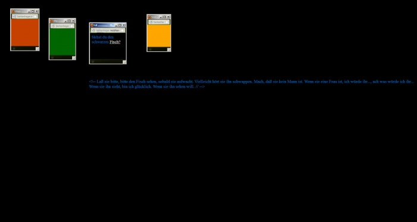
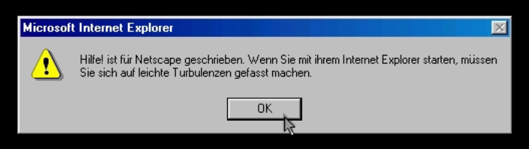
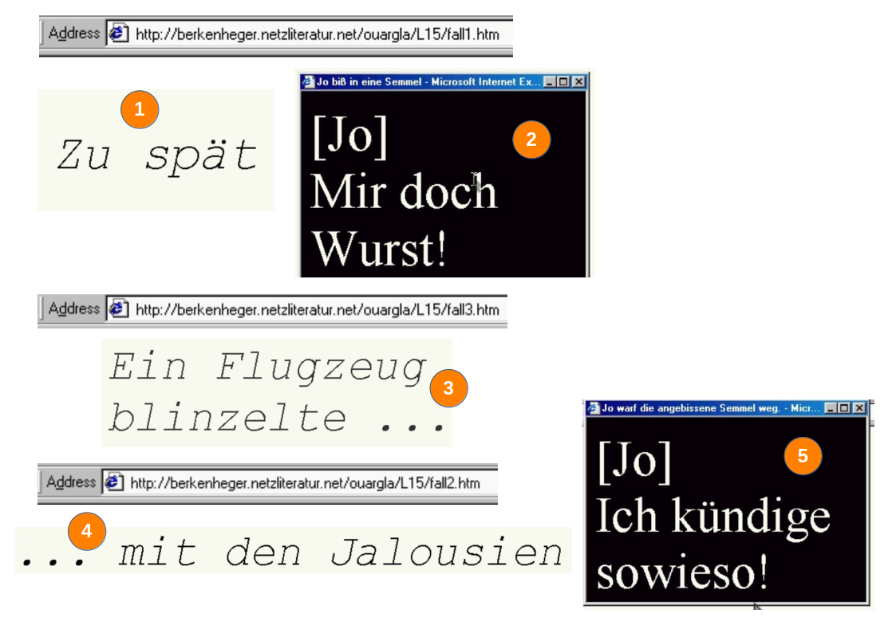
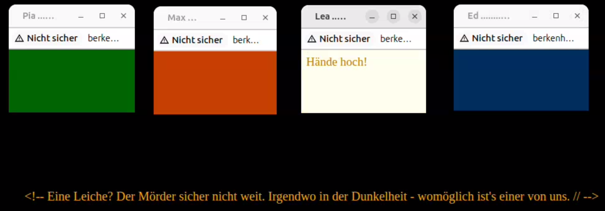
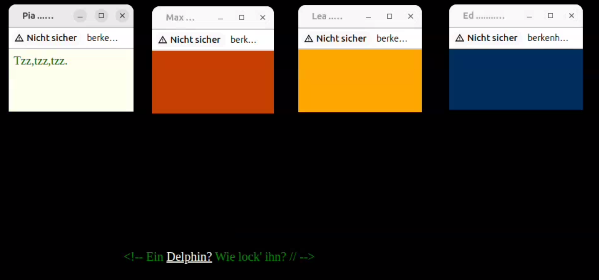
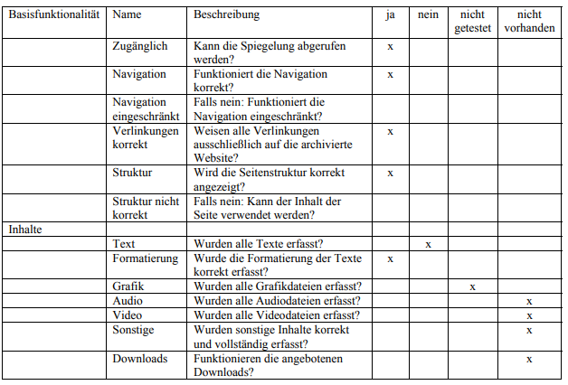
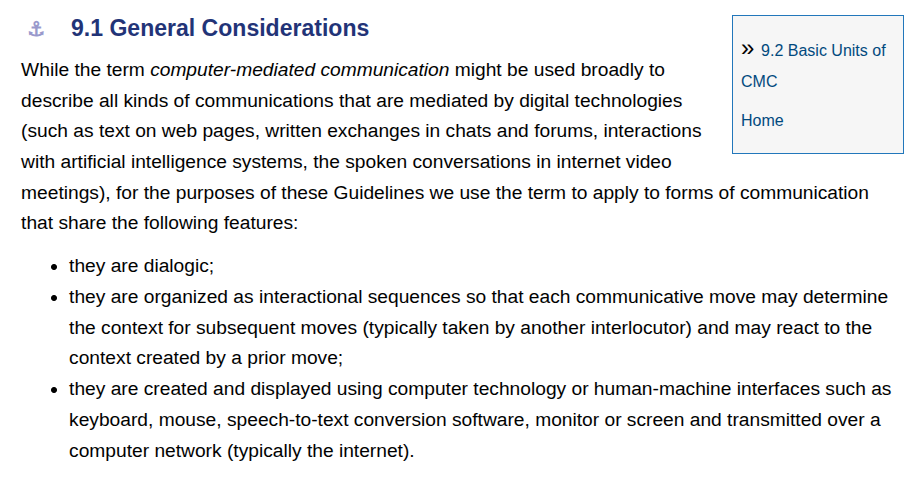
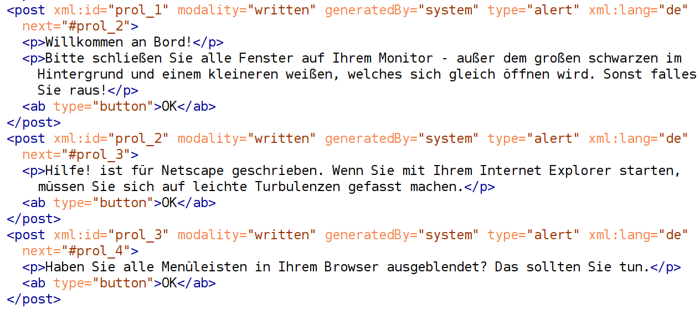
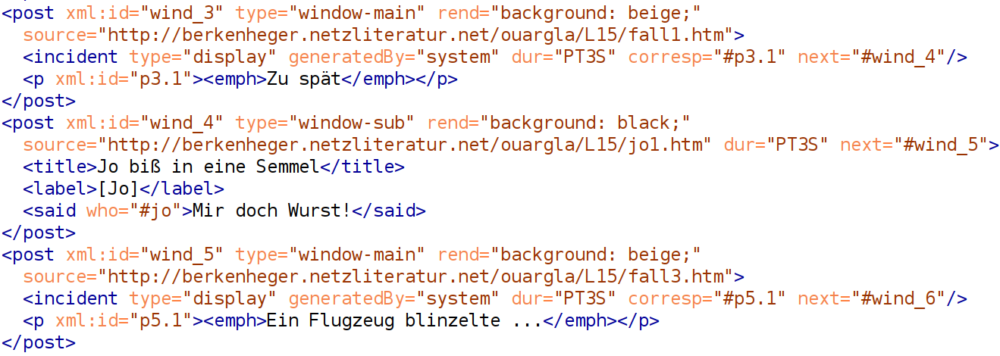
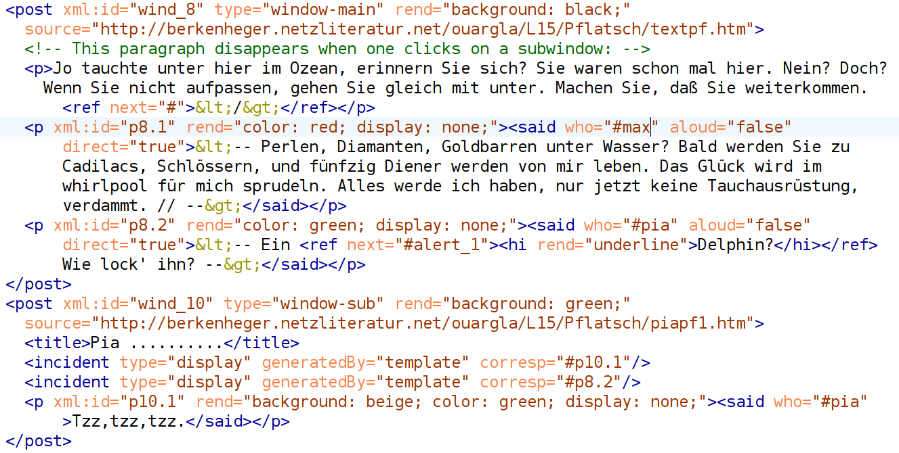

Encoding Hyperfiction: Preliminary Considerations for a Digital Edition of Susanne Berkenheger’s "Hilfe! Ein Hypertext aus vier Kehlen" (1998)
Ulrike Henny-Krahmer (Universität Rostock)
TEI Conference, Kraków, September 17, 2025.
Presentation: https://hennyu.github.io/tei_25/

Overview
- The hyperfiction "Hilfe!"
- Proposals for encoding
- Considerations: DSE of hyperfiction
The hyperfiction "Hilfe!"
The hyperfiction "Hilfe!"
|
 |
The hyperfiction "Hilfe!" — Prologue
The hyperfiction "Hilfe!" — Dynamic sequence
The hyperfiction "Hilfe!" — Static scene
The hyperfiction "Hilfe!" — Static scene
The hyperfiction "Hilfe!"
the screen transforms into a stage and the text sequences into a “fascinating form of kinetic poetry.”
(Wirth 2005)
How about the preservation of "Hilfe!"?
|
 |
Proposals for encoding
TEI chapter on CMC
Encoding of prologue windows
Encoding of a dynamic sequence
Encoding of a static scene
Open issues in the encoding
- not sure if @next and @prev are good for sequences
- or @synch in connection with a timeline
- not sure how user interaction can be encoded more explicitly
Considerations: DSE of hyperfiction
Considerations: encoding of hyperfiction
- potential to analyze possible paths through the narrative more easily; analyze technical means (windows, alerts, buttons, ...); analyze rendering (colors, etc.)
- work as a whole becomes accessible at once
- independent of presentation media
Considerations: DSE of hyperfiction
- different versions? web vs. CD-Rom
- code level
- many different types of hyperfiction
References
- Bajohr, Hannes and Simon Roloff. 2024. Digitale Literatur. Zur Einführung. Hamburg: Junius Verlag.
- Berkenheger, Susanne. 1998. “Hilfe! Ein Hypertext aus vier Kehlen.” http://www.wargla.de/hilfe.htm. Accessed September 16, 2025.
- Berkenheger, Susanne. 2000. Hilfe! Ein Hypertext aus vier Kehlen. Zürich: update verlag.
- DLA Marbach, ed. 2015. “Hilfe!” Wiki des Projekts ‚Netzliteratur authentisch archivieren und verfügbar machen.‘ Last changed Mai 3, 2016, accessed September 16, 2025. https://wwik.dla-marbach.de/line/index.php?title=Hilfe!&oldid=4070.
- Landow, George P. 1992. Hypertext. The Convergence of Contemporary Critical Theory and Technology. Baltimore: Johns Hopkins University Press.
- Short, Emily. 2024. “Narrative and Interactivity.” In: The Cambridge Companion to Literature in the Digital Age, edited by Adam Hammond, 177–193. Cambridge: Cambridge University Press. https://doi.org/10.1017/9781009349567.012.
- TEI Consortium. 2025. “Computer-mediated Communication.” In: TEI: Guidelines for Electronic Text Encoding and Interchange. P5 Version 4.10.2, September 4. https://tei-c.org/release/doc/tei-p5-doc/en/html/CMC.html.
- Wirth, Uwe. 2005. “Wem der große Wurf gelungen...: Ansätze einer Hypernarratologie; dargestellt anhand von Susanne Berkenhegers Hypertext 'Hilfe!'.” Jahrbuch für Computerphilologie, edited by Georg Braungart, Karl Eibl, and Fotis Jannidis, 145–166. Paderborn: mentis. https://nbn-resolving.org/urn:nbn:de:hebis:30-1138081.
Thank you very much for your attention!
Presentation:
https://hennyu.github.io/tei_25/